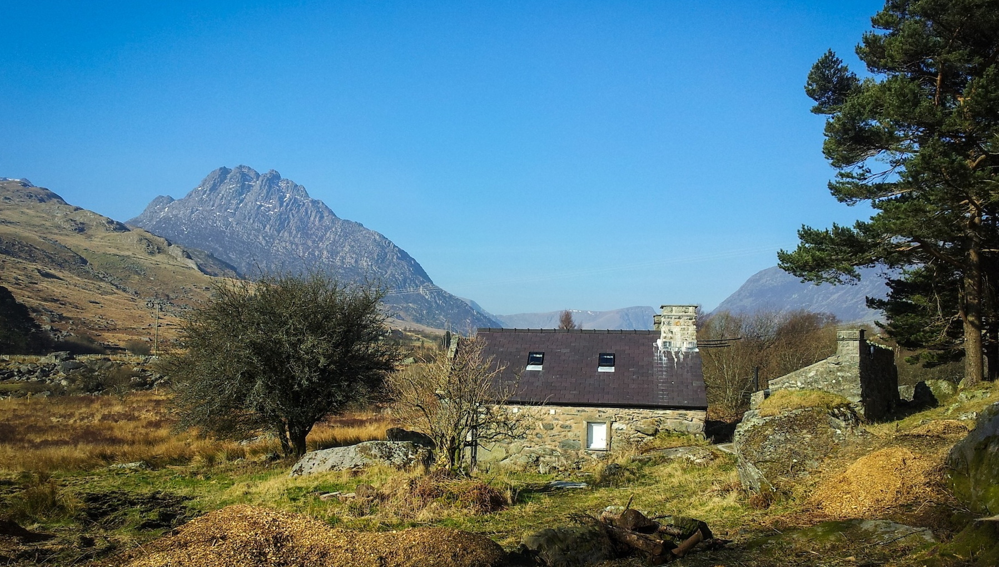

The Hut
We all love the hut!
Situated ideally at the heart of Ogwen Valley, with views of Tryfan, our hut is a perfect base camp for climbing anywhere in North Wales but especially the exceptional climbing of the Ogwen Valley and Llanberis Pass.
Snowden is also easily in reach and a little further out are the legendary sea cliffs of Gogarth.
It has 13 beds and a fully equipped kitchen for you to use. You can book as many or as few beds as you need.
And if you need some motivation for a big day out in the mountains, you can be assured someone has slept under that roof that's been there and done it all before. The hut was used back in the 1920's for the early ascents in the area and also as a training base for the 1953 Everest expedition.